library(tidyverse)Warning: package 'dplyr' was built under R version 4.4.3met <- read_csv("data/MET Office Weather Data.csv")
met <- met |>
mutate(date = make_date(year, month, 1))This lab accompanies the Week 6 notes, Data Visualisation Principles.
ggplot2.When you have finished the lab, there are more questions on the same data in lab_06_practice.qmd, including themes, facets, colourblind-safe palettes and violin plots.
The file data/MET Office Weather Data.csv contains monthly weather observations from 36 stations in the UK between 1853 and 2020. The fields included are:
The year and month are stored as integers. The first cell below reads the data and adds a new column called date using the lubridate make_date function.
library(tidyverse)Warning: package 'dplyr' was built under R version 4.4.3met <- read_csv("data/MET Office Weather Data.csv")
met <- met |>
mutate(date = make_date(year, month, 1))Solution. Below, find the plot.
met |>
filter(station == "southampton" & month == 7) |>
ggplot(aes(x = date, y = tmax)) +
geom_line() +
labs(
x = "Date",
y = "Maximum temperature (°C)",
title = "July maximum temperatures in Southampton"
)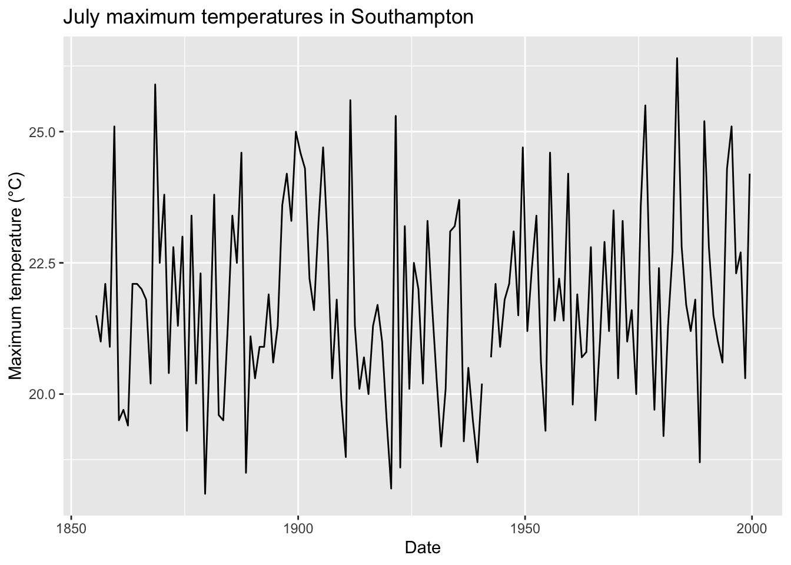
In the full plot there is a short gap in the line just after 1940, but it is hard to see exactly where it starts and ends. Zooming in on the \(x\) axis to 1925–1950 makes it much clearer:
met |>
filter(station == "southampton" & month == 7) |>
ggplot(aes(x = date, y = tmax)) +
geom_line() +
labs(
x = "Date",
y = "Maximum temperature (°C)",
title = "July maximum temperatures in Southampton"
) +
coord_cartesian(xlim = c(ymd("1925-01-01"), ymd("1950-12-31")))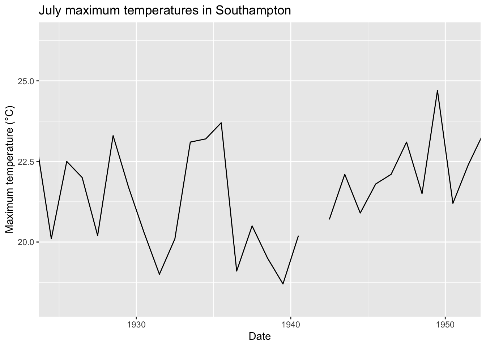
The gap lies between 1940 and 1945, so we can filter the dataset to just those years to see the root cause:
met |> filter(station == "southampton" & month == 7 & year >= 1940 & year <= 1945)# A tibble: 6 × 9
year month tmax tmin af rain sun station date
<dbl> <dbl> <dbl> <dbl> <dbl> <dbl> <dbl> <chr> <date>
1 1940 7 20.2 11.7 0 98.3 208 southampton 1940-07-01
2 1941 7 NA 13.2 0 47.2 239. southampton 1941-07-01
3 1942 7 20.7 11.9 0 45 173 southampton 1942-07-01
4 1943 7 22.1 12.6 0 53.6 208. southampton 1943-07-01
5 1944 7 20.9 13.4 0 68.8 119. southampton 1944-07-01
6 1945 7 21.8 12.8 0 56.1 214. southampton 1945-07-01The break is due to an NA value of tmax in 1941: the row for July 1941 exists, but the maximum temperature was not recorded. geom_line cannot draw a line to a missing value, so it leaves a gap, rather than joining 1940 directly to 1942.
Next we look at every month of the year, not just July, at four stations.
Solution. The next plot shows a scatter plot by station:
stations <- c("southampton", "oxford", "sheffield", "paisley")
met |>
filter(station %in% stations) |>
ggplot(aes(x = date, y = tmax, colour = station)) +
geom_point(alpha = 0.2) +
geom_smooth() +
labs(
x = "Date",
y = "Maximum temperature (°C)",
title = "Monthly maximum temperatures"
)`geom_smooth()` using method = 'gam' and formula = 'y ~ s(x, bs = "cs")'Warning: Removed 172 rows containing non-finite outside the scale range
(`stat_smooth()`).Warning: Removed 172 rows containing missing values or values outside the scale range
(`geom_point()`).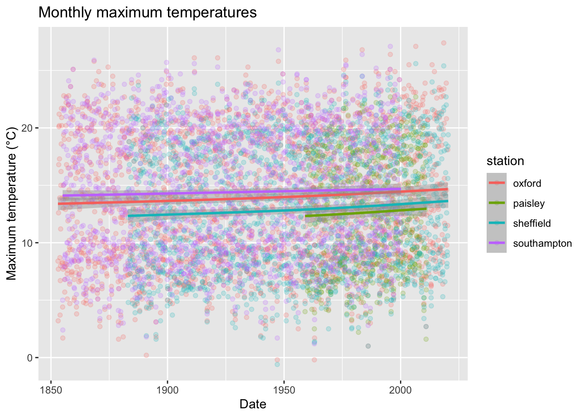
geom_smooth() prints a message saying which method it used. Unlike the straight method = "lm" lines in the Week 6 notes, here it has fitted a flexible curve (method = 'gam'), which can bend to follow the data. The grey band around each line shows the uncertainty in the fitted curve (a confidence interval); it is narrow here because there is a lot of data. Lowering alpha makes the individual points faint, so the lines stand out.
The smooth lines rise slightly at each station, which hints at an increasing trend. But it is hard to be sure from this plot. Because every month of the year is included, the points at each station span a band about 20°C tall (cold winters to warm summers), and any long-term change is small by comparison.
The plot above mixes together every month of the year, so the seasonal cycle hides the long-term trend. Averaging over each year removes the seasonal cycle, since every (complete) year contains one of each month.
Solution. We compute the annual means, and also count how many months of tmax each mean is based on, since we will need this below:
annual <- met |>
filter(station %in% stations) |>
group_by(station, year) |>
summarise(
mean_tmax = mean(tmax, na.rm = TRUE),
n_months = sum(!is.na(tmax)),
.groups = "drop"
)
annual |>
ggplot(aes(x = year, y = mean_tmax, colour = station)) +
geom_line() +
geom_smooth() +
labs(
x = "Year",
y = "Annual mean maximum temperature (°C)",
title = "Annual mean maximum temperatures"
)`geom_smooth()` using method = 'loess' and formula = 'y ~ x'Warning: Removed 11 rows containing non-finite outside the scale range
(`stat_smooth()`).Warning: Removed 10 rows containing missing values or values outside the scale range
(`geom_line()`).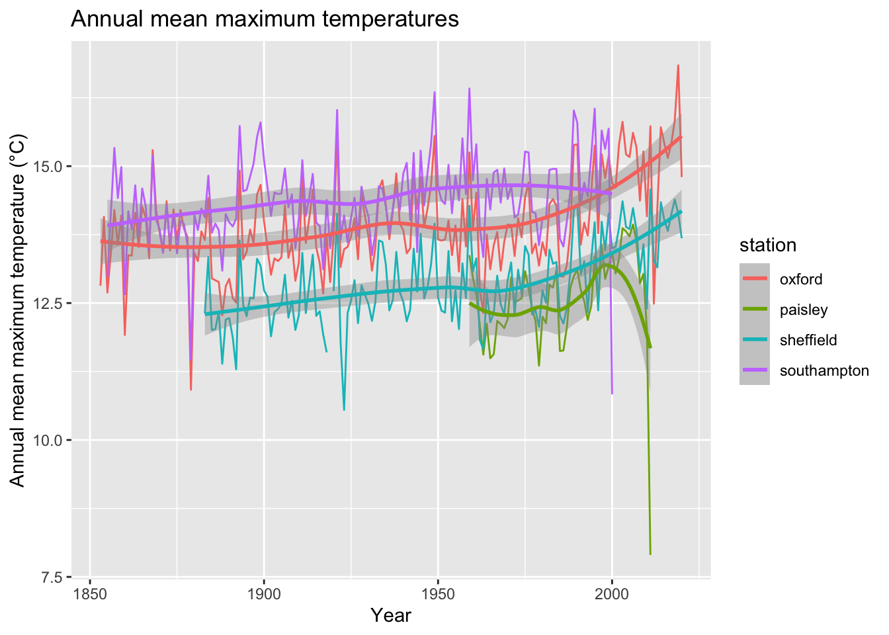
The \(y\) axis now covers a few degrees rather than 25, and the upward trend is much easier to see. But there are some odd spikes, particularly at the ends of the records. Sorting by mean_tmax shows the most extreme years:
annual |> arrange(mean_tmax) |> head(5)# A tibble: 5 × 4
station year mean_tmax n_months
<chr> <dbl> <dbl> <int>
1 paisley 2011 7.9 3
2 sheffield 1923 10.6 6
3 southampton 2000 10.8 3
4 oxford 1879 10.9 12
5 sheffield 1892 11.3 12annual |> arrange(desc(mean_tmax)) |> head(5)# A tibble: 5 × 4
station year mean_tmax n_months
<chr> <dbl> <dbl> <int>
1 oxford 2019 16.8 5
2 southampton 1959 16.4 12
3 southampton 1949 16.4 12
4 southampton 1995 16.0 12
5 southampton 1921 16.0 12The coldest “year” in the data is Paisley in 2011, but that mean is based on only 3 months of data; the warmest is Oxford in 2019, based on only 5 months. An annual mean from a partial year depends on which months are present: a year containing only winter months will look very cold. Using na.rm = TRUE made the mean calculation work, but it did not make the answer meaningful. (Where a station has no tmax values at all for a year, mean(..., na.rm = TRUE) returns NaN, “not a number”, and ggplot drops these rows with a warning.)
Keeping only complete years:
annual |>
filter(n_months == 12) |>
ggplot(aes(x = year, y = mean_tmax, colour = station)) +
geom_line() +
geom_smooth() +
labs(
x = "Year",
y = "Annual mean maximum temperature (°C)",
title = "Annual mean maximum temperatures (complete years only)"
)`geom_smooth()` using method = 'loess' and formula = 'y ~ x'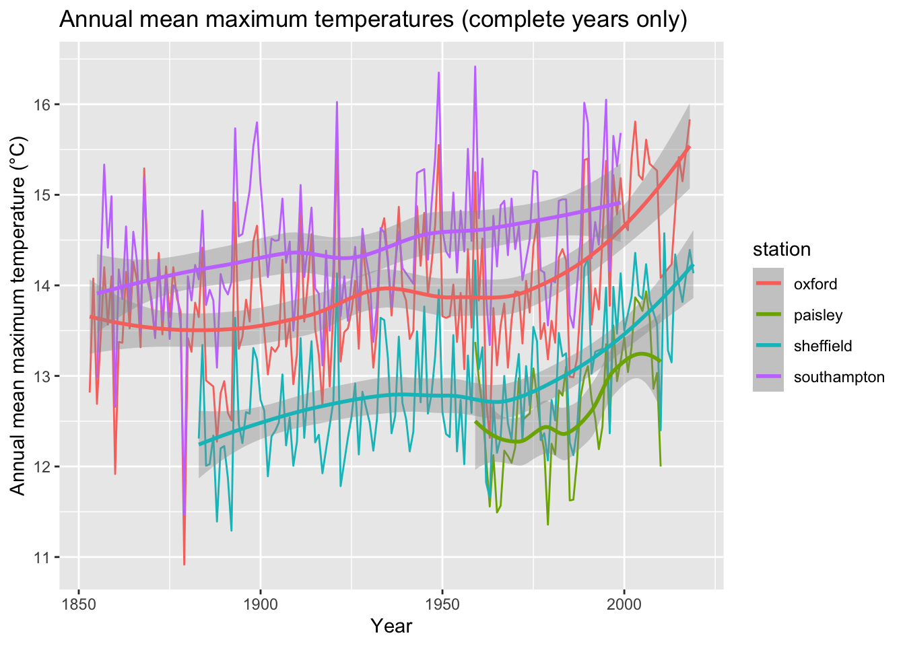
Oxford and Sheffield warm by about 2°C over their records, most of it since around 1980. Southampton warms by about 1°C, more steadily, although its record stops in 2000. Paisley’s record is too short (1959–2011) to say much on its own. Note that when we filter out incomplete years, geom_line simply joins the remaining points, so there is no break in the line where a year is missing. Compare this with the July plot at the start of this task, where an NA value produced a visible gap.
Solution. geom_bar() counts the rows in each category for us, so we only need to give it an x aesthetic.
met |>
ggplot(aes(x = station)) +
geom_bar() +
labs(
x = "Station",
y = "Number of monthly records",
title = "Number of monthly records by station"
) +
theme(axis.text.x = element_text(angle = 45, hjust = 1))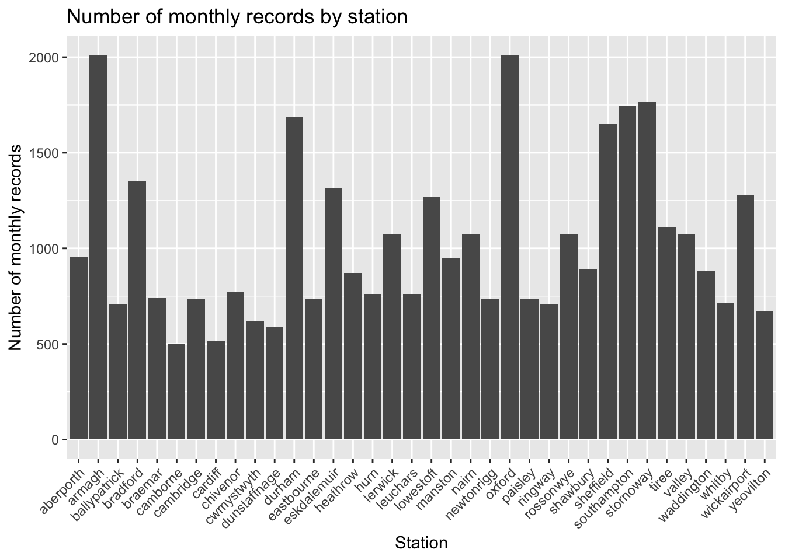
Alternatively we can count the rows ourselves with count(), which creates a column n. The bar heights are then already in the data, so we use geom_col():
met |>
count(station) |>
ggplot(aes(x = station, y = n)) +
geom_col() +
labs(
x = "Station",
y = "Number of monthly records",
title = "Number of monthly records by station"
) +
theme(axis.text.x = element_text(angle = 45, hjust = 1))
The two plots are identical.
Solution. We first compute the mean rainfall at each station with group_by and summarise. Because we have already computed the height of each bar, we use geom_col(); geom_bar() would instead count the rows in each category. To keep only the five wettest stations, we sort the summarised data with arrange(desc(...)) and keep the first five rows with head(5) before passing it to ggplot.
met |>
group_by(station) |>
summarise(mean_rainfall = mean(rain, na.rm = TRUE), .groups = "drop") |>
arrange(desc(mean_rainfall)) |>
head(5) |>
ggplot(aes(x = station, y = mean_rainfall)) +
geom_col() +
labs(
x = "Station",
y = "Mean monthly rainfall (mm)",
title = "Mean monthly rainfall at the five wettest stations"
) +
theme(axis.text.x = element_text(angle = 45, hjust = 1))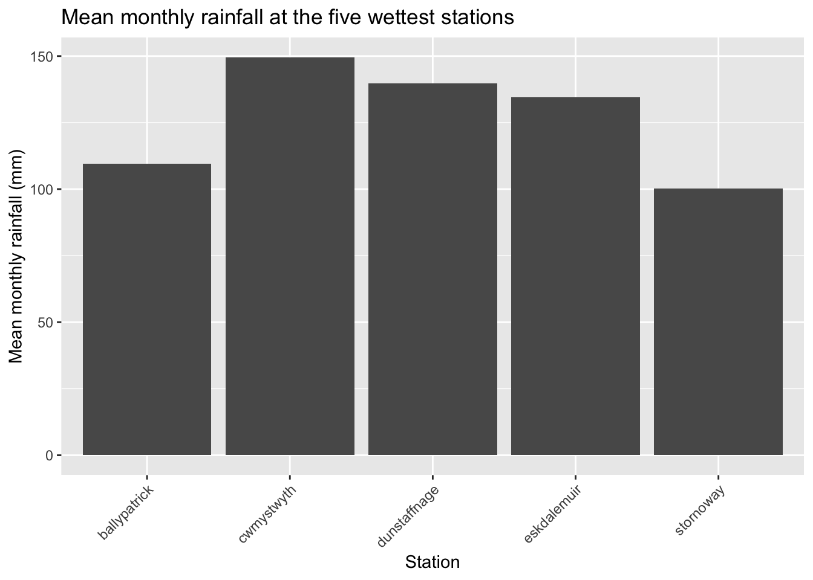
Cwmystwyth has a mean monthly rainfall of about 150 mm and Stornoway about 100 mm, so Cwmystwyth is only about 1.5 times as wet. To make the difference look much bigger, we can zoom in on the \(y\) axis with coord_cartesian, as we did in Task 1, so that the bars no longer start at zero:
met |>
group_by(station) |>
summarise(mean_rainfall = mean(rain, na.rm = TRUE), .groups = "drop") |>
arrange(desc(mean_rainfall)) |>
head(5) |>
ggplot(aes(x = station, y = mean_rainfall)) +
geom_col() +
coord_cartesian(ylim = c(95, 150)) +
labs(
x = "Station",
y = "Mean monthly rainfall (mm)",
title = "Mean monthly rainfall at the five wettest stations"
) +
theme(axis.text.x = element_text(angle = 45, hjust = 1))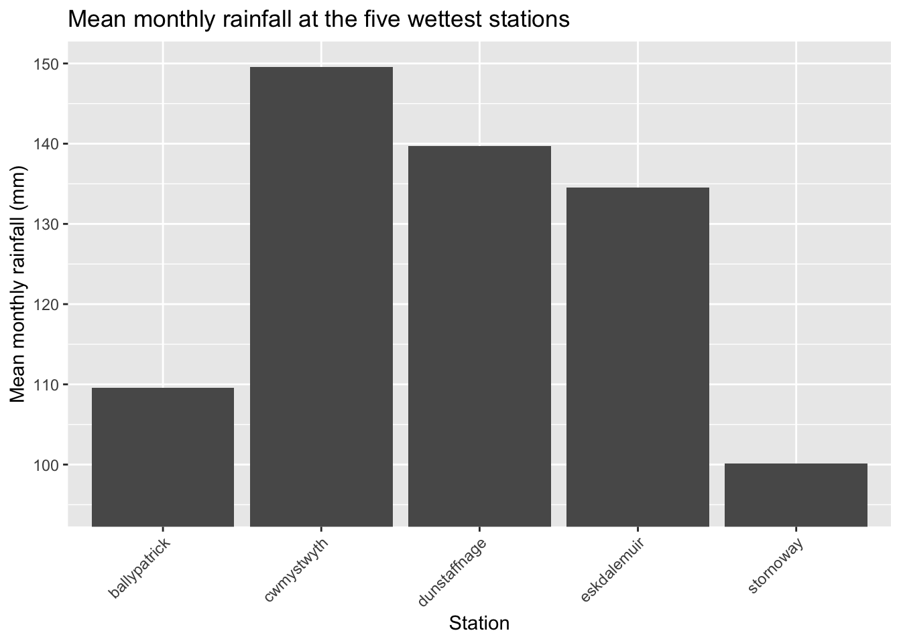
The Cwmystwyth bar is now around seven times as tall as the Stornoway bar. This breaks the first principle, “Be honest with scales”: we read a bar chart by comparing the lengths of the bars, so the value axis should start at zero. It is the same trick as the welfare chart in the Week 6 notes. Nothing in the plot is technically false: a careful reader can spot the trick by checking where the \(y\) axis starts. But most readers will judge the bar lengths rather than read the axis.
(Setting scale_y_continuous(limits = c(95, 150)) instead does not work: ggplot removes any bar that extends outside the scale limits, and since every bar starts at zero, all five disappear with a warning. coord_cartesian zooms in on the plot after the bars have been drawn, instead.)
Bar charts of averages hide how much the rainfall varies from month to month, so next we look at its distribution.
Solution. Box plots use geom_boxplot(), with the grouping variable on one axis and the numeric variable on the other.
met |>
ggplot(aes(x = station, y = rain)) +
geom_boxplot() +
labs(
x = "Station",
y = "Rainfall (mm)",
title = "Distribution of monthly rainfall by station"
) +
theme(axis.text.x = element_text(angle = 45, hjust = 1))Warning: Removed 1498 rows containing non-finite outside the scale range
(`stat_boxplot()`).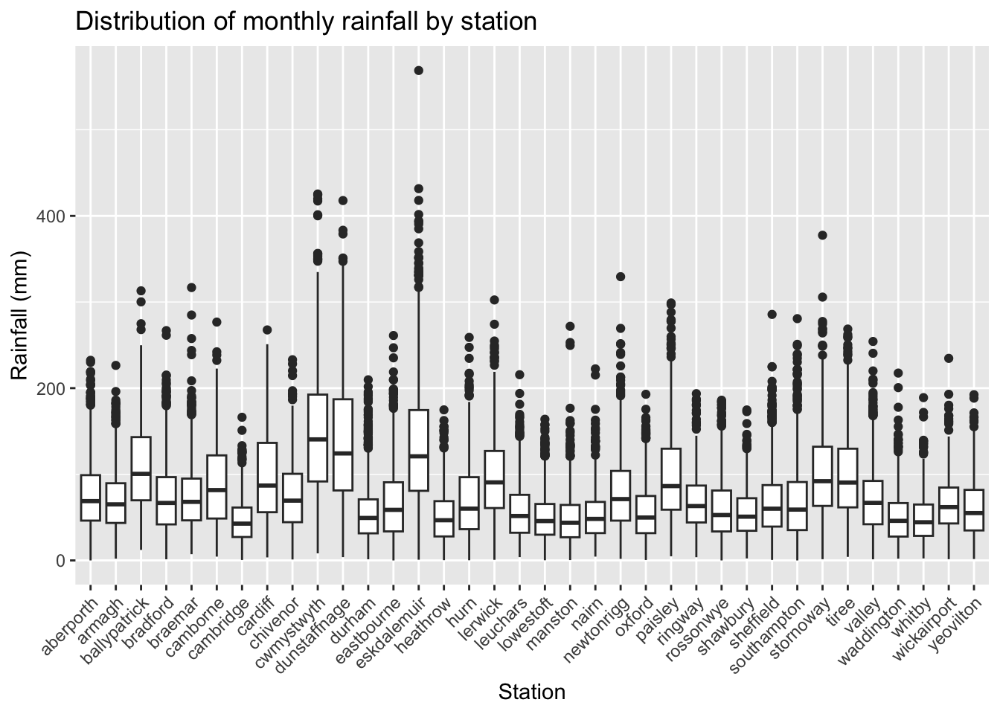
By default, the whiskers extend up to 1.5 times the interquartile range (IQR) beyond the box, and any points outside them are drawn as outliers. There are plenty of high outliers (very wet months), but no low outliers at all. Rainfall cannot be negative, and at every station the lower whisker limit (the lower quartile minus 1.5 times the IQR) is below zero, so no value can fall beneath it.
Solution. A histogram needs only an x aesthetic: geom_histogram() divides the \(x\) axis into bins and counts the rows in each one.
met |>
ggplot(aes(x = rain)) +
geom_histogram(bins = 50) +
labs(
x = "Monthly rainfall (mm)",
y = "Number of months",
title = "Distribution of monthly rainfall across all stations"
)Warning: Removed 1498 rows containing non-finite outside the scale range
(`stat_bin()`).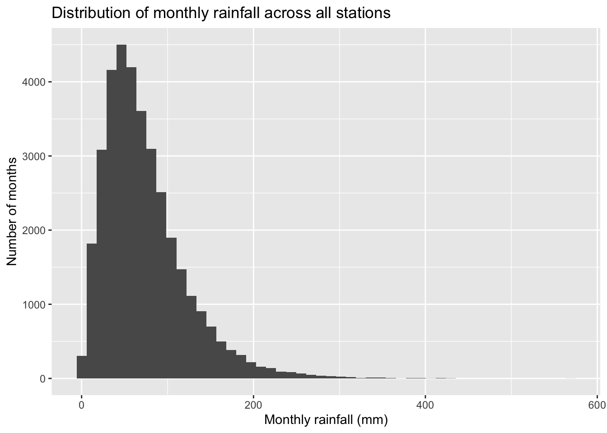
With too few bins (say 5) the shape is lost; with too many (say 500) the histogram becomes noisy. Something in the range 30–100 works well here.
The distribution is strongly right-skewed: half of all months have between about 40 and 95 mm of rain (the median is 63 mm), but there is a long tail of very wet months reaching up to 569 mm (Eskdalemuir, December 2015). On the left the distribution stops sharply at zero, since rainfall cannot be negative.
For the log scale, we add a scale transformation, as in the Week 6 notes:
met |>
ggplot(aes(x = rain)) +
geom_histogram(bins = 50) +
scale_x_continuous(transform = "log10") +
labs(
x = "Monthly rainfall (mm, log scale)",
y = "Number of months",
title = "Distribution of monthly rainfall across all stations"
)Warning in scale_x_continuous(transform = "log10"): log-10 transformation
introduced infinite values.Warning: Removed 1503 rows containing non-finite outside the scale range
(`stat_bin()`).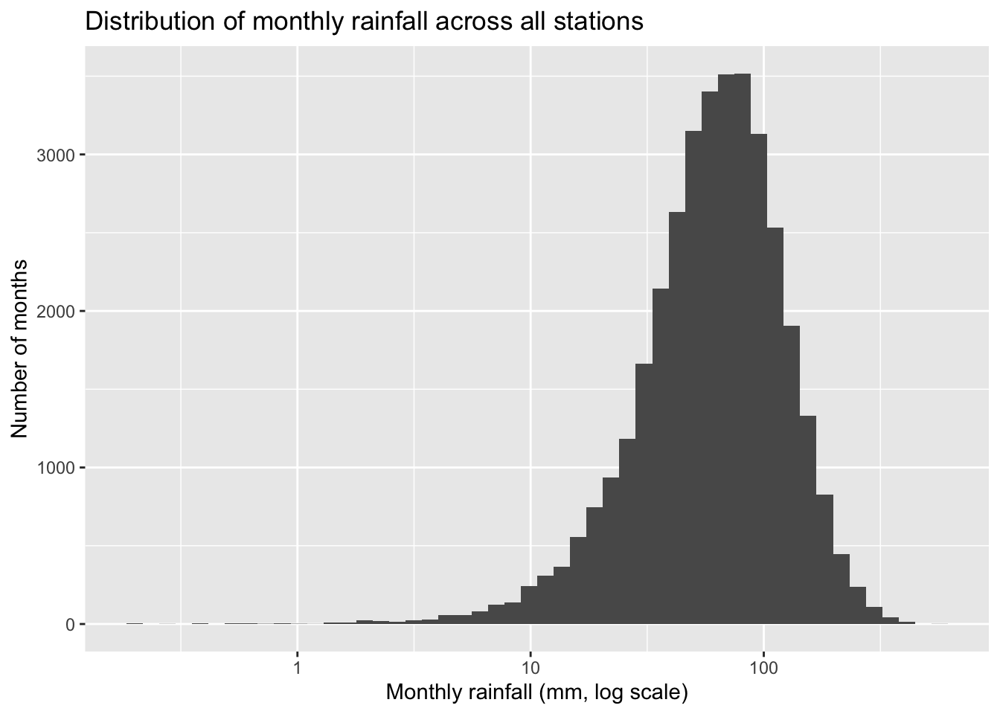
The log scale stretches out small values and squashes large ones. The long tail of wet months is pulled in, and the distribution is now left-skewed instead, with a tail of unusually dry months (below 10 mm). So the log scale does not make the distribution symmetric, but it does make the dry months, which were squashed against zero before, much easier to see.
There are two warnings. The first says that the log transformation “introduced infinite values”, and the second that 1503 rows were removed, compared with 1498 for the original histogram. The 1498 are the rows where rain is NA. The extra 5 are months with zero rainfall, because \(\log_{10}(0) = -\infty\) cannot be plotted:
met |> filter(rain == 0)# A tibble: 5 × 9
year month tmax tmin af rain sun station date
<dbl> <dbl> <dbl> <dbl> <dbl> <dbl> <dbl> <chr> <date>
1 1986 2 2.3 -2.7 24 0 117 aberporth 1986-02-01
2 1959 2 6.6 2 4 0 73.4 eastbourne 1959-02-01
3 1957 4 13.5 5.1 0 0 140. rossonwye 1957-04-01
4 1925 6 22.7 10.9 0 0 327. southampton 1925-06-01
5 1940 8 22.1 12.1 0 0 238. southampton 1940-08-01Some UK months really have been this dry, so these are probably genuine observations rather than errors, yet the log scale drops them from the plot. It is always worth reading warnings like this rather than ignoring them.
Carry on with the questions in lab_06_practice.qmd.